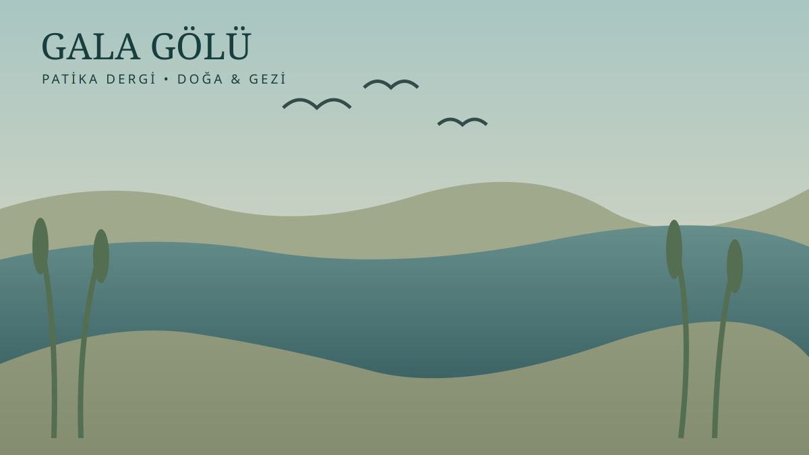

Gala Gölü: Suyun Aynasında Saklı Bir Dünya
Trakya’nın kalbinde, suyun, kuşların ve sessizliğin buluştuğu eşsiz bir doğa hazinesi.

Trakya’nın güneybatısında
Trakya’nın güneybatısında, Meriç Deltası’nın bereketli topraklarında, insanın doğayla yeniden buluşabileceği olağanüstü bir yer vardır: Gala Gölü Milli Parkı.
Burası yalnızca bir göl değildir. Sazlıkların arasında saklanan kuşların, suyun üzerinde süzülen bulutların, rüzgârla konuşan kamışların ve binlerce yıldır devam eden doğal yaşamın ortak evidir.
Edirne’nin Enez ve İpsala ilçeleri sınırları içerisinde uzanan bu sulak alan, Trakya’nın en önemli ekolojik zenginliklerinden biridir.
Gala Gölü’ne vardığınızda ilk dikkatinizi çeken şey sessizliktir. Ancak biraz dinlediğinizde bu sessizliğin aslında sayısız sesle dolu olduğunu fark edersiniz. Kuşların ötüşü, sazlıkların hışırtısı, suyun kıyıya hafifçe dokunuşu…
Doğa burada kendi dilinde konuşmaktadır.
Kuşların gökyüzündeki büyük yolculuğu
Gala Gölü’nü özel kılan en önemli özelliklerden biri, göçmen kuşların yaşam döngüsündeki yeridir.
Avrupa, Asya ve Afrika arasında göç eden kuşlar için Trakya sulak alanları önemli beslenme, dinlenme ve barınma noktalarıdır.
Pelikanlar, balıkçıllar, ördekler, karabataklar ve dönemsel olarak görülebilen flamingolar bu zengin kuş yaşamının dikkat çekici üyeleridir.
Kuşların hareketlerini izlerken doğanın görünmeyen düzenini düşünmemek mümkün değildir. Binlerce kilometre yolculuk eden bir kuş, sınır kapılarını, ülkeleri veya siyasi haritaları tanımaz. Onun dünyasında yalnızca mevsimler, rüzgârlar, su ve yaşam vardır.
İnsanların çizdiği sınırların ötesinde, doğa kendi bütünlüğünü korumaya çalışmaktadır.
Sazlıkların ardındaki yaşam
Gala Gölü’nün çevresindeki sazlıklar, bataklıklar, sığ sular ve açık su yüzeyleri birbirinden farklı canlılara yaşam alanı sunar.
Bu bitki örtüsü yalnızca güzel bir manzara oluşturmaz. Sazlıklar balıkların üreme alanlarını, kuşların yuvalanma bölgelerini ve birçok küçük canlının korunma ortamını meydana getirir.
Sulak alanlar aynı zamanda suyun doğal döngüsünde görev alır; tortuların tutulmasına, besin maddelerinin dönüşümüne ve biyolojik çeşitliliğin devamına katkıda bulunur.
Bu nedenle bir gölün korunması, yalnızca suyun korunması değildir. O göle bağlı bütün yaşam ilişkilerinin korunmasıdır.
Gala Gölü’nün karşı karşıya olduğu tehlikeler
Sulak alanlar dünyanın en hassas ekosistemleri arasındadır. Tarımsal faaliyetlerden kaynaklanabilen kirlilik, su rejimindeki değişimler, kuraklık, iklim değişikliği ve insan baskısı bu alanların ekolojik dengesini tehdit edebilir.
Gala Gölü için de koruma çalışmalarının temelinde su kalitesinin, doğal habitatların ve kuşların yaşam alanlarının devamlılığı bulunmalıdır.
Doğayı korumak, insanı doğadan tamamen uzaklaştırmak anlamına gelmez. Asıl mesele, insan faaliyetlerinin doğanın kendini yenileme kapasitesini aşmamasıdır.
Gala Gölü’ne bir yolculuk
Gala Gölü’nü ziyaret etmek isteyen doğaseverler için ilkbahar ve sonbahar, özellikle kuş gözlemciliği bakımından ilgi çekici dönemlerdir. Görülebilecek türler mevsime, su seviyesine ve hava koşullarına göre değişir.
Yanınıza bir dürbün, fotoğraf makinesi ve yürüyüşe uygun ayakkabılar almanız yeterli olabilir. Ancak burada en değerli şey sabırdır.
Çünkü doğa kendisini acele edenlere değil, beklemeyi bilenlere gösterir.
Ziyaret sırasında belirlenmiş güzergâhlardan ayrılmamak, kuşların üreme ve dinlenme alanlarına yaklaşmamak, çöp bırakmamak ve yaban hayatını rahatsız etmemek gerekir.
Son söz: Doğa bizim mülkümüz değildir
Gala Gölü bize basit ama derin bir gerçeği hatırlatır: İnsan, doğanın sahibi değil, onun bir parçasıdır.
Bir pelikanın kanat çırpışı, sazlıkların arasındaki küçücük bir canlının varlığı, gölün üzerinde doğan güneş… Bunların hiçbiri insan için yaratılmış değildir. Hepsi yaşamın büyük bütünlüğü içerisinde kendi değerini taşır.
Belki de insanlığın yeniden öğrenmesi gereken şey budur: Doğaya hükmetmek yerine onunla birlikte yaşamayı başarmak.
Çünkü bir gölü kaybettiğimizde yalnızca suyu değil, o suyun çevresinde kurulmuş binlerce yaşamın hikâyesini de kaybederiz.
Tarım ve Orman Bakanlığının yayımladığı envanter ve güncel sınır bilgilerine göre.
Kaynaklar: Tarım ve Orman Bakanlığı – Gala Gölü Milli Parkı ve Enez Kaymakamlığı.
Troçki • Patika Dergi
Not: Bu yazı genel bir doğa ve gezi değerlendirmesidir. Güncel ziyaret kuralları ve alanın koruma statüsü için ilgili resmî kurumların duyurularını kontrol edin.